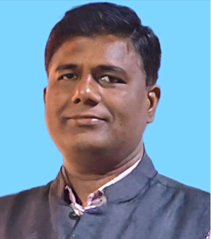

Professor | Artificial Intelligence | Machine Vision | Robotics | IoT
Email: santosh.kr.sahoo@gmail.com | Phone: +91-7008212780
Dr. Santosh Kumar Sahoo is an academician with more than 21 years of experience in teaching, research, and academic administration. His research areas include Artificial Intelligence, Machine Vision, Robotics, Computer Vision, and Internet of Things.